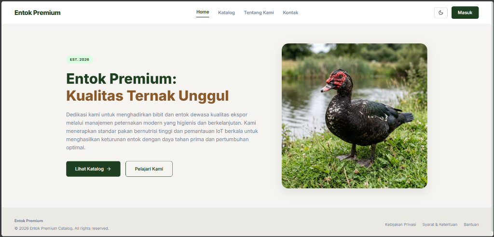

Dashboard aktifSistem Web · Peternakan
Entok Monitoring System
Sistem monitoring peternakan yang menghubungkan dashboard, proses operasional penjaga, dan pembacaan timbangan IoT.
- Tantangan
- Menyatukan komposisi pakan, formulasi, checklist penjaga, dan data timbangan dalam satu alur kerja.
- Yang dibangun
- Frontend Next.js, REST API Flask, database MySQL, serta endpoint pembacaan timbangan dan batch racikan.
- Kontribusi
- Pengembangan web, integrasi API, penyusunan alur data, dan deployment aplikasi.
- Status & bukti
- Source code tersedia di GitHub dan dashboard produksi aktif melalui halaman login.